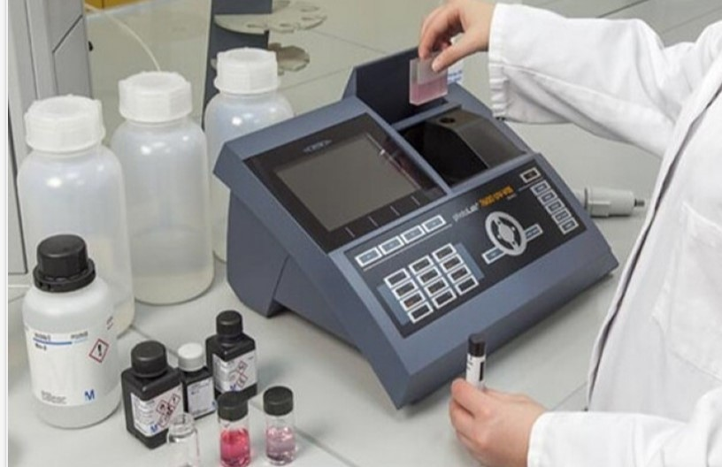

Retour à la liste des TP

TP1
Suivi temporel d’une transformation chimique par spectrophotométrie
Objectif
L’objectif principal est de réaliser le suivi cinétique d’une réaction d’oxydoréduction par spectrophotométrie UV-Visible.
Pack TP (Matériel et Réactifs)
| Réactifs | Matériel |
|---|---|
| Solution d'iodure de potassium (K⁺ + I⁻) | Béchers et Erlenmeyers |
| Eau oxygénée (H₂O₂) | Pipettes jaugées et propipette |
| Acide sulfurique (H₂SO₄) | Chronomètre |
Propriétés physico-chimiques
- Eau oxygénée : Liquide incolore, oxydant puissant. Se décompose lentement à la lumière.
- Iodure de potassium : Solide blanc (incolore en solution), réducteur.
- Diiode (I₂) : Produit de la réaction, donne une coloration jaune à brune à la solution.
Sécurité (Risques et EPI)
Risques :
L'acide sulfurique et l'eau oxygénée concentrée sont corrosifs et peuvent provoquer de graves brûlures.
Équipements de Protection Individuelle (EPI) obligatoires :
- Blouse en coton fermée
- Lunettes de protection
- Gants en nitrile (lors de la manipulation de l'acide)
🧪 Quiz TP1
1. Quelle est la réaction étudiée ?
2. Quelle espèce est colorée ?
3. Loi de Beer-Lambert ?